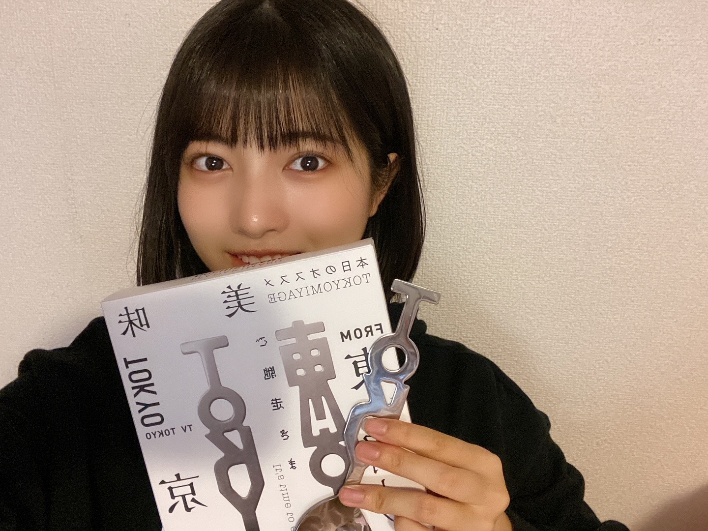
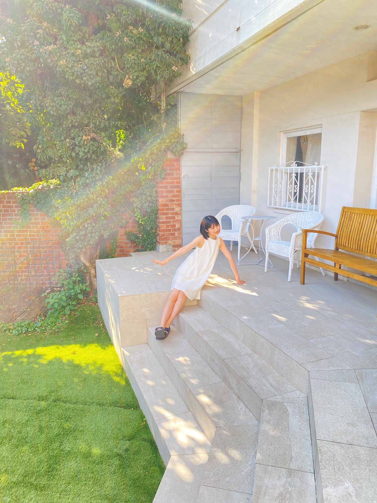

2020/1215Tueお疲れ様です！東京土産や〜！ 林瑠奈です。
本日もお疲れ様です。
乃木坂46、4期生の林瑠奈です。
神奈川県出身高校2年生17歳
華咲くセブンのティーンの林瑠奈です。
負けるなしょげるな林瑠奈、今日も1日頑張るな
(ピンポーン)
47周目となりました、ブログリレー。
予約していた『東京フォーク・TOKYOスプーン』が届きました！

さらばさんがやられてる番組の【今日からやる会議】をずっと拝見していまして、
この後ノギザカスキッツの収録でお会いしたときに、予約したことを伝えたら、「もうすぐ届くと思うわ〜」って言ってはったんですよ。
写真で出ている実物は、森田さんがデザインされたTOKYOスプーンです！
有り難く使わせていただきます〜
...........................................................................
12月6日発売の『ヤングマガジン』さんに、
黒見、璃果、松尾、弓木、林の5人で掲載していただいています。
以下、オフショットです。


BRODYさんやFLASHスペシャルさんを思い出しますね。


りかも言ってましたが、懐かしの白衣装です。
りかのオレンジって珍しいですよね。
なおの緑はわりとイメージ通りな感じ。
わたしは赤でした！
インタビューもしていただきました。是非！！
♪:*:･･:*:･･:*:･･:*:･･:*:･･:*:♪:*:･･:*:･･:*:･･:*:･･:*:･
12月8日。
レコメン！さんに出演させていただきました。
乃木坂四期生メガ盛り祭りです！
やくぼちゃんとあやめちゃんの珍しい組み合わせだったんですけど、のりさんのペースに揉まれながら楽しくお話しさせて頂きました。
タイムフリーで今日まで聴けるので是非！！
ちなみに今日は、さくちゃんとせーらちゃんが生出演しますよ〜！
♪:*:･･:*:･･:*:･･:*:･･:*:･･:*:♪:*:･･:*:･･:*:･･:*:･･:*:･
明日はミュウちゃんです。
みゆちゃんの自撮りがわたしの携帯に入ってるよ。
アディオス！！！！！！！
次のブログ担当日は12月20日！
いよいよM-1や〜！！たのしみすぎる！！！
かしこ

PROFILE
新4期生リレー
202104
| SUN | MON | TUE | WED | THU | FRI | SAT |
|---|---|---|---|---|---|---|
| 1 | 2 | 3 | ||||
| 4 | 5 | 6 | 7 | 8 | 9 | 10 |
| 11 | 12 | 13 | 14 | 15 | 16 | 17 |
| 18 | 19 | 20 | 21 | 22 | 23 | 24 |
| 25 | 26 | 27 | 28 | 29 | 30 | |

コメント(178)
瑠奈ちゃんヤンマガ〜可愛い
ミーグリ たくさん喋ろうね
M-1楽しみですね
質問
林瑠奈ちゃんは誰が優勝すると思いますか？
更新日の今日めちゃくちゃ寒いね。厚着してても凍えそう風邪引きそう。
りょうたです
さて4期ラも終わって落ち着いて26枚目に向けて気持ちも入ってる頃なんじゃないかなと
思います。
あ、コラム読んだよ。まさかイヤリングがそんな序盤から落ちてたなんて気付かなかった。
そのあとのメンバーのフォローがすごいね。
状況に応じて冷静に事を対処する。すごいと思います！！見てた人でもほぼ気付いてないよね。やんちゃん、ゆりちゃんあっぱれ！
配信でもそうだけどハプニングは付き物やからそう言った対処能力の高さ、瞬時な判断で良くも悪くもになってしまうよね。
また4期ライブが見れるのを期待してます。
コラムの最後にるなぴのよかった曲が何か…
ってなってるけどなんやったの？
前のShowroomで言ってたTFCかな？
るなぴ推しに限らず「自分のこと」は結構反響あったんじゃない？？
僕個人としても自分のことが1番良かったしそのために見たと言っても過言ではないよ。
でもどの曲もよかったよね！
でも結局Out of the blueが良かったって人が多いと思うなぁ。
あ、がくたびのオープニングるなぴ出てたね。今後がくたびで何かしてくれるのかな？
期待してまーーす！
体調に気をつけて。
じゃあまた
オフショットありがとう！！かあいい！
またミーグリ当たったからよろしくな
M-1楽しみやなぁ
今日も可愛いネ
ヤンマガ買うの忘れてました。マジですまぬ。
明日の朝、学校行くついでに買うから許してください。
質問「最近4番目くらいにおもしろいと思う芸人さんは？」
4番目ってとこが肝です。光太刀魚。
そんじゃ今回はこの辺でアディオス！！アディオス！！！
(大事なので2回言いました。愛しさの三枚下ろし。)
今日写真沢山だね、めっちゃ可愛いわ（笑）
はやしさんパワー沢山貰えました！！
好きです！
中でも東京フォークと東京スプーンを手にした写真の瑠奈ちゃんは、櫻坂46の渡邊理佐さんに似ている感じがしましたよ。
ブログありがとうございます！
質問したいです！
Q霊感ありますか？
チャァオ〜〜〜!☆彡
るなたん、お疲れ様です❕❤️❤️❤️❤️❤️笑顔
るなたんの綺麗なぁ〜〜アンヨを初めて見たよ〜〜⤴️⤴️⤴️❕❤️❤️❤️❤️❤️笑顔
あ、でも〜〜〜⤴️⤴️
いつでもダンスパフォーマンスで〜〜・・
座って立ち上がる動作が素早くできるように〜〜
御飯をいっぱい食べて、連続スクワット1000回できるぐらいに〜〜
頑張ってねぇ〜〜⤴️⤴️⤴️❕❤️❤️❤️❤️❤️笑顔
(＠＾▽゜＠）ゞ❤️❤️❤️❤️❤️
❇️❇️おすまし！⚜️❇️⭐彡
白衣装も赤の衣装もめちゃ似合ってる！
あとミーグリ取れたよ！お話するの楽しみ！
もう47周かぁ...
日本一周しましたね！！←
そんなことはどうでもよくて(笑)
オフショットありがとう！
透明感すごすぎます...
これぞアイドルって感じだね！！
ポスターにして家に飾りたい←
今日、自分の住んでるところでは初雪が降りました。
雨かなぁと思って外見たら雪が舞っててびっくりです(笑)
急に寒くなってきて電気ストーブと毛布も大急ぎで出してきました(笑)
まだしばらく寒さは続くみたいだからお互い体調には気を付けようね...
年明け、元気にミーグリで会えることを楽しみにしてます！
(楽しみすぎて毎回ミーグリミーグリ言ってるわ...ごめん...)
TOKYOスプーン買ったんだね笑
僕はいらないかな？笑笑
アンダラ楽しみ！！アンダー曲は特に好きです！
今日も1日お疲れさまでした
寒いですね
めっちゃ寒いですね
明日は雪が降るかもしれないらしいですよ
仕事休み取ってる日でよかったです
林は雪でテンション上がる人ですか？
テンション上がったら何します？
では、またねー
今、さくちゃんと聖来ちゃんのラジオ(卒アル)聴いてます。昨夜はレコメン聴けなかったので、聴き逃し配信？？聴かせてもらうね！！
アディオスっていう外国の人と、かしこっていう日本人女性ペアに思えてきたよ。最後の締め笑
今日のブログは正統派って感じだね。
次のブログも楽しみにしとるよ！
りかちゃんに増して夏感のあるグラ
ビアですね。来年は、夏、思いっき
り楽しみたいなぁ。
部屋着のような薄着ワンピース、可
愛いです。
ハイジみたい。
アディオス
写真が綺麗すぎる！つい保存しちゃった！
TOKYOスプーン、自分も初めて見た時普通にオシャレだなって思った！欲しいな〜笑
M-1楽しみだなー、るなぴが推してたからニューヨークにチューモークして観るよ！(ごめんなさい)
またね！！
TOKYOスプーンの形面白いね！
文字通りの形になってるけど持ちやすさはどうなんでしょう？笑
ヤングマガジンのオフショットありがとう！
やっぱり瑠奈ちゃんはスタイル抜群だね！朝も長くてすらっとしてるから衣装が映えてるよ〜
そういえばこの前、やんちゃんがモバメで日刊スポーツさんのコラムを読んで細かい所まで見られて驚いてたよ(笑)
次回20日のM-1楽しみだね！ただアンダラと被ってるから少し迷ってます(笑)
瑠奈ちゃんの予想は誰が優勝すると思いますか？
次の更新も待ってます！またね、
レコメンも楽しかったです！もっと長く聞いていたかったなぁ。
M-1楽しみですね！
僕の優勝予想は見取り図さん、1番楽しみなのはマジラブさん、敗者復活予想（というか希望？w）は金属バットさんです。そんなとこで、アディオス！
p.s.握手券取れました！今から楽しみです。
のりしお
って、２０２０年も残すところ後１６日しかないぞぉ～＼(◎o◎)／！ 今年は、るなぴにとっても４期ちゃん５人にとっても、めっちゃ充実した１年になったね。
お見立て会から始まり、バスラ、乃木中の初参加、初の４６時間ＴＶ、ノギザカスキッツ・ＡＣＴ2、そして、忘れちゃいけない、最近終わったばかりの「４期ちゃん１６人体制でのＬＩＶＥ」。本当の最後の最後に紅白歌合戦と。
この１年でるなぴも「ド緊張」から「笑顔溢れる乃木メン・４期ちゃん」になった事を僕は知ってるんだぞぉ～。
１つ例を挙げると僕は見れなかったけど先日の「４期ちゃんＬＩＶＥ」の「ロマいか」のイントロの「笑顔」。あれで、僕も一気にるなぴの成長ぶりにやられたわ～凹〇ｺﾃｯ♪
そして、５人の決定的な変化はもう一つあるのを僕は気づいてるんだぞぉ～♪それは５人揃ってブログを書く時、今までは「新」４期生と書いていたのが、４期ちゃんＬＩＶＥを挟んで「４期生」とフツーに名乗っているから、そこでもまた１つ成長したなぁ～って思ってしまった( *´艸｀)
ヤンマガさんのオフショット。確かにゆみっき～から始まって、りかちゃん・るなぴの３人は「お団子ゆみっき～」だったり、「オレンジりかちゃん」だったりしたから、一人ひとり違って、また良い感じだねぇ～って改めて見惚れしまった(/ω・＼)ﾁﾗｯ・・・・・(*ﾉωﾉ)♪
これから４期ちゃんも「多方面で」活躍する時が多くなると思うけど、るなぴもしっかりと「自分を見失わないように、４期ちゃんは１６人で一人前」だと思うから、個性をしっかりと出していって乃木活を楽しんでね♪
それじゃあ、次のブログもめっちゃ楽しみにしてるねぇ～♪また5日後に会おうね☆彡
明日も一日！一緒にお家時間を楽しもうね♪大好きだよ♪るなぴ☆彡
ほんといつも楽しみにしてます
るなちゃん見ると元気がでる！
色んな芸人さんが好きな林にとってスキッツはマジでいい場所ですね！
オフショットあざす！！！
これからも応援してます！！！！！！！
るなちゃんが買ったなら私も買おうかなー！
また感想聞かせて欲しいです！
ヤンマガ買いました！始め開いた時、可愛いが溢れて本能で閉じちゃった笑
((るなちゃんの透明感えぐいてぇ！！！))
そう心が叫んでました笑 声に出そうだったけど笑笑
オフショありがとー！スタイル完璧！脚長すぎ！細い！
白ワンピはほんと似合いますね！
白ワンピ×るなちゃん＝最強
パンツスタイルもカジュアルでまた別のるなちゃんを感じて好きです！！！
るなちゃん何でも似合うから羨ましいです。。。
M-1、るなちゃん見るんですか？一緒に楽しみましょー！
またコメントしますね！アディオス！
ー質問ー
・始めてみたいことってある？
・写真集を発売するならどこで撮影したい？
・最近見た夢ってなに？
ありがとう！次回も楽しみにしているよ。
今日も一日お疲れ様！
遅くなってしまいましたが4期生ライブお疲れ様でした。
すごく楽しかったです。
特に『ロマいか』『自分のこと』が最高でした。
相当練習したんだと思うけどファンのために頑張ってくれて本当にありがとう。
ライブの意気込みが書かれた林さんの直筆カードが乃木坂モバイルの抽選で当選しました！
大切にさせてもらいます＼(^o^)／
坂道研修生のときから応援してたので、林さんが乃木坂に入ってくれたこと改めて嬉しく思ってます。
これからも応援してますぜ！
p.s.
ヤングマガジン買ったよ☆
いつもブログ更新ありがとう☆
るんちゃん！
やっほー！
ひろき(Yandji)です☺️
ブログ更新ありがとー！！！
質問タイムー！！！
今年やり残したことってある？
また、コメントするね！
では、またねー！
ひろき(Yandji)より
オフショどれもかわいいしるなぴのスタイルの良さが際立ってていいね✨
もうすぐアンダラだけどるなぴは見るの？？
もし見たら報告楽しみにしてるね！！
次の更新待ってるね！！
東京フォークとかTOKYOスプーンってあるんやね！
オフショットありがとう
可愛い。
私もお笑い好きやけんM‐１見るよ～!
愛媛県在住 中３女子 れいちゃんずより
追伸：今日も一日お疲れ様！
アンダーライブの千秋楽の配信とまだ迷ってますが…
自分はニューヨークの優勝が見てみたいなと思ってます！
来週のブログがいつ書かれるやつかわからないけど、M-1優勝決定前だったら優勝予想知りたいです！
p.s ノギザカスキッツで瑠奈ちゃんが活躍するスキットをそろそろ見たいです〜、その日が来るまで楽しみにしてます！
アディオス！！
自分は学生だけど、学業とお仕事の両立は本当に大変な事だと思うからとても尊敬しています。
忙しい時期だとは思うけど、寒くなってきたから体調にだけは気を付けて過ごしてね！ずっと応援してます！
またミーグリ当たったからよろしくな
M-1楽しみやなぁ
M-1楽しみですね！予想は誰ですか？？
カタカナで書くと…
イヨイヨエムワンダネ～ハチブオンプ
今年はどのコンビが優勝するんだろうね～？
いずれかのコンビが優勝するんだろうね～？
東京フォークとTOKYOスプーンってなに笑
飾るものなの？それともはやしは使う？笑
ヤンマガ発売当日に買いに行ったよ！！
どの写真も良かったんやけどね、お気に入りは紫の糸を持ってるカットかな❗️
はやし的にはどのカットがお気に入り❓
ガクたびのOPの話やんやけど、はやしが現れて手を振ってきた時は天と地が入れ替わるくらいの衝撃を受けた笑
安定で可愛すぎるよ…笑
最近かなり寒くなってきたから風邪には気を付けてしっかり温まってね！
また5日後のブログ更新待ってまーす‼️
寒くなってきたので体調には気をつけてくださいね！
コメントする